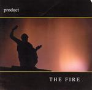

| Artist: | Product |
| Title: | The Fire |
| Label: | Cyclops CYCL 147 |
| Length(s): | 62 minutes |
| Year(s) of release: | 2005 |
| Month of review: | [11/2005] |
| 1) | From The Tall Tower I | 3.27 |
| 2) | It Begins | 5.41 |
| 3) | World Of Nero | 4.36 |
| 4) | Netting | 4.18 |
| 5) | Don't Talk | 4.23 |
| 6) | All Is All | 2.43 |
| 7) | Where Or Why | 3.32 |
| 8) | From This Tall Tower II | 3.01 |
| 9) | Jaded Love I | 4.48 |
| 10) | Age | 1.13 |
| 11) | Jaded Love II | 3.16 |
| 12) | Isis | 3.33 |
| 13) | Haze | 4.27 |
| 14) | It Ends | 4.04 |
| 15) | The Fire | 9.29 |
World Of Nero is much rowdier, with some tense rhythm guitar work, as if the clock is ticking. Then we flow into catchy melodic rock that we find also with bands such as Gazpacho, Pineapple Thief and the like. Product is of a more epic character and is also a band who works more on the atmosphere side of things. This is further exemplified on Netting and Don't Talk, which all have a dark and moody atmosphere and rather pronounced percussion.
All Is All is a somewhat up-beat and poppy track, but the somber sheen stays over the track the whole way. Where Or Why continues the softer somber, acousticy and melodic line of this album. The vocalist sounds quite tragic here. From This Tall Tower II seems an instrumental, with sound effects mostly, but halfway we get some spoken vocals, that become more and more 'sung'. In fact, it turns into a majestic and tragic piece of work.
Product knows how to form atmospheric music into songs. Jaded Love I is no exception. There is the moodiness that pervades the whole album, The Blue Nile/No-Man style vocals, a bit crooner like even. The vocals are mainly in the lower regions, and not always that melodic. The end of the song is uplifting as the organs set in.
Before we come to the second part of Jaded Love, first we encounter Age, a very soundtrackish piece. Jaded Love II then opens with a laid back guitar solo. Then the drummer starts to pound, and the music swells. It also dies, playfully with piano, to swell again. Excellent piece of work this. The manicy vocals at the end remind of Steve Hogarth, but a bit lower.
Isis is another acoustic guitar dominated piece, while Haze is a more orchestral piece, although still subdued. The use of (synth) strings here reveals a seventies singersongwriter tendency similar to No-Man. Towards the end, the music builds up, and becomes louder and more forceful.
It Ends sounds quite mean by comparison. Listen to that rhythm guitar softly grinding. It announces it seems, the evil that is to come. The music becomes a bit more bouncy then, the guitar is slightly psychedelic, and effect rich.
The Fire is the closer and it is actually quite long. It opens slowly with low acoustic guitar, reminding me of the opening of Marillion's Brave. The vocals are vocoded, wavery. Slowly, the momentum increases, although the music never breaks loose or anything, do not expect this kind of easy climax. The music does increase in fullness and can be quite majestic.